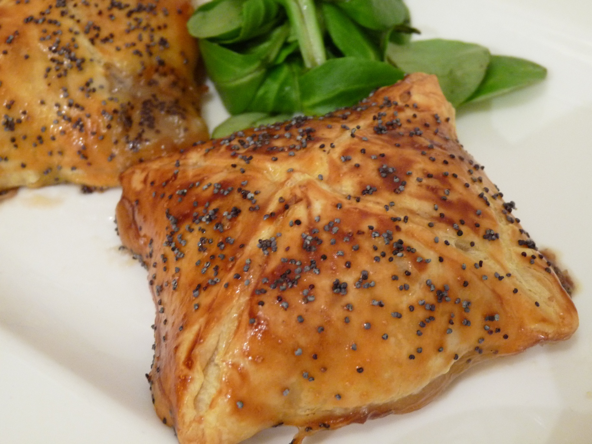

<ion-view view-title="Chèvre en feuilletée">

    <ion-content class="padding">


        <h1>Chèvre en feuilletée</h1>

        

        <p class="gras">Temps de préparation : 20 minutes</p>

        <p class="gras">Temps de cuisson : 15 minutes</p>

        <p class="gras">Ingrédients (pour 4 personnes) :</p>

        <ul>
            <li>- 1 bûche de fromage de chèvre</li>
            <li>- 1 pâte feuilletée</li>
            <li>- 1 oeuf</li>
            <li>- Basilic</li>
        </ul>
        <br>

        <p class="gras">Préparation de la recette :</p>

        <p>Couper la bûche en 8 rondelles égales.</p>

        <p>Avec un verre, couper 16 ronds dans la pâte feuilletée.</p>

        <p>Poser chaque rondelle de fromage sur un rond de pâte feuilletée, parsemer de basilic, et recouvrir avec la pâte feuilletée restante.</p>

        <p>Fermer tout autour les petits pâtés ainsi réalisés.</p>

        <p>Dorer au jaune d'oeuf avant de passer au four (15 min à thermostat 7/210°C).</p>

        <p>Se marie très bien avec une salade verte.</p>


    </ion-content>

</ion-view>